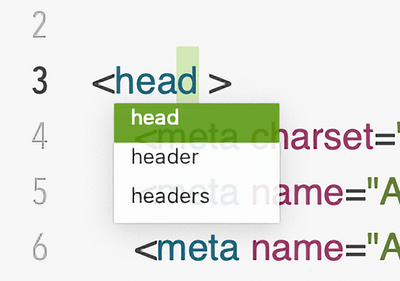

La finalización de palabras le ayuda a introducir palabras más rápido, como al escribir palabras reservadas de lenguajes de programación, escribiendo solo unas pocas letras y seleccionando la palabra completa de la lista de candidatos.

Para completar una palabra, siga las siguientes instrucciones:
Escribe las primeras letras de una palabra.
Elija el comando Completar en el menú Edición, o presione Alt-Esc o F5.
Elige la palabra que quieres introducir de la lista.
Para cerrar la lista, pulsa Esc.
En la sección Autocompletado del panel de configuración Editar, puede cambiar los tipos de posibles terminaciones que aparecen en la lista. Por ejemplo, la lista puede incluir solo las palabras de su documento, o adicionalmente las palabras especificadas por su sintaxis.